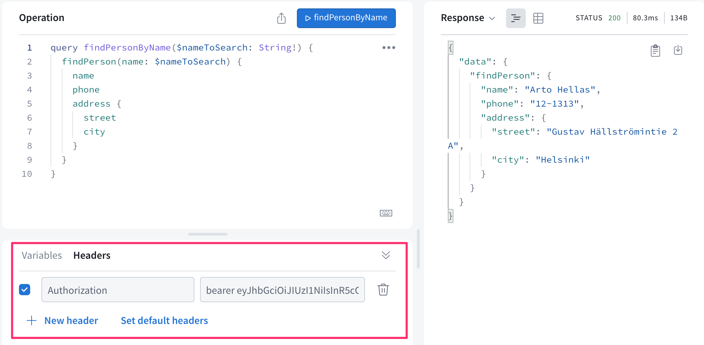

我们现在将把用户管理添加到我们的应用中，但让我们首先开始使用数据库来存储数据。
Mongoose and Apollo
安装mongoose。
npm install mongoose
人的模式已被定义如下。
const mongoose = require('mongoose')
const schema = new mongoose.Schema({
name: {
type: String,
required: true,
minlength: 5
},
phone: {
type: String,
minlength: 5
},
street: {
type: String,
required: true,
minlength: 5
},
city: {
type: String,
required: true,
minlength: 3
},
})
module.exports = mongoose.model('Person', schema)
我们还包括一些验证。required: true，确保一个值的存在，实际上是多余的：我们已经用GraphQL确保字段的存在。然而，在数据库中也保留验证是很好的。
我们可以通过以下的改变使应用大部分工作。
const { ApolloServer, UserInputError, gql } = require('apollo-server')
const mongoose = require('mongoose')
const Person = require('./models/person')
const MONGODB_URI = 'mongodb+srv://databaseurlhere'
console.log('connecting to', MONGODB_URI)
mongoose.connect(MONGODB_URI, { useNewUrlParser: true, useUnifiedTopology: true })
.then(() => {
console.log('connected to MongoDB')
})
.catch((error) => {
console.log('error connection to MongoDB:', error.message)
})
const typeDefs = gql`
...
`
const resolvers = {
Query: {
personCount: async () => Person.collection.countDocuments(),
allPersons: async (root, args) => {
// filters missing
return Person.find({})
},
findPerson: async (root, args) => Person.findOne({ name: args.name }),
},
Person: {
address: (root) => {
return {
street: root.street,
city: root.city,
}
},
},
Mutation: {
addPerson: async (root, args) => {
const person = new Person({ ...args })
return person.save()
},
editNumber: async (root, args) => {
const person = await Person.findOne({ name: args.name })
person.phone = args.phone
return person.save()
},
},
}
这些变化是非常直接的。然而，有几个值得注意的地方。我们记得，在Mongo中，一个对象的识别字段被称为_id，我们以前必须自己把字段的名称解析为id。现在GraphQL可以自动做到这一点。
另一件值得注意的事情是，解析器函数现在会返回一个 promise ，而以前它们会返回普通的对象。当一个解析器返回一个 promise 时，Apollo服务器送回 promise 所解析的值。
例如，如果执行了下面的解析器函数。
allPersons: async (root, args) => {
return Person.find({})
},
Apollo服务器等待 promise 的解析，并返回结果。所以Apollo的工作原理大致是这样的。
Person.find({}).then( result => {
// return the result
})
让我们完成_allPersons_解析器，使其考虑到可选参数_phone_。
Query: {
// ..
allPersons: async (root, args) => {
if (!args.phone) {
return Person.find({})
}
return Person.find({ phone: { $exists: args.phone === 'YES' } })
},
},
所以，如果查询没有给出参数_phone_，就会返回所有的人。如果该参数的值是YES，则查询的结果为
Person.find({ phone: { $exists: true }})
返回的是字段_phone_有值的对象。如果参数的值是NO，则查询返回_phone_字段没有值的对象。
Person.find({ phone: { $exists: false }})
Validation
和GraphQL一样，现在使用mongoose模式中定义的验证对输入进行验证。为了处理模式中可能出现的验证错误，我们必须在_save_方法中添加一个错误处理_try/catch_块。当我们在catch中结束时，我们抛出一个合适的异常。
Mutation: {
addPerson: async (root, args) => {
const person = new Person({ ...args })
try {
await person.save()
} catch (error) {
throw new UserInputError(error.message, {
invalidArgs: args,
})
}
return person
},
editNumber: async (root, args) => {
const person = await Person.findOne({ name: args.name })
person.phone = args.phone
try {
await person.save()
} catch (error) {
throw new UserInputError(error.message, {
invalidArgs: args,
})
}
return person
}
}
后端的代码可以在Github找到，分支part8-4。
User and log in
让我们把用户管理加入我们的应用。为了简单起见，我们假设所有的用户都有相同的密码，并且是硬编码的。按照第4章节的原则，为所有用户保存单独的密码是很直接的，但由于我们的重点是GraphQL，这次我们将省去所有这些额外的麻烦。
用户模式如下。
const mongoose = require('mongoose')
const schema = new mongoose.Schema({
username: {
type: String,
required: true,
minlength: 3
},
friends: [
{
type: mongoose.Schema.Types.ObjectId,
ref: 'Person'
}
],
})
module.exports = mongoose.model('User', schema)
每个用户都通过_friends_字段与系统中的一堆其他人相联系。我们的想法是，当一个用户，例如mluukkai，把一个人，例如Arto Hellas，添加到列表中时，这个人就被添加到他们的_friends_列表中。这样，登录的用户可以在应用中拥有自己的个性化视图。
登录和识别用户的方式与我们在第四章节中使用REST时使用的方式相同，都是通过使用令牌。
让我们这样来扩展模式。
type User {
username: String!
friends: [Person!]!
id: ID!
}
type Token {
value: String!
}
type Query {
// ..
me: User
}
type Mutation {
// ...
createUser(
username: String!
): User
login(
username: String!
password: String!
): Token
}
查询_me_返回当前登录的用户。新用户是通过_createUser_改变创建的，而登录是通过_login_改变进行的。
这些改变的解析器如下。
const jwt = require('jsonwebtoken')
const JWT_SECRET = 'NEED_HERE_A_SECRET_KEY'
Mutation: {
// ..
createUser: async (root, args) => {
const user = new User({ username: args.username })
return user.save()
.catch(error => {
throw new UserInputError(error.message, {
invalidArgs: args,
})
})
},
login: async (root, args) => {
const user = await User.findOne({ username: args.username })
if ( !user || args.password !== 'secret' ) {
throw new UserInputError("wrong credentials")
}
const userForToken = {
username: user.username,
id: user._id,
}
return { value: jwt.sign(userForToken, JWT_SECRET) }
},
},
新用户的改变是简单的。登录改变检查用户名/密码对是否有效。如果它确实有效，它会返回一个从第4章节熟悉的jwt令牌。
就像之前的REST案例一样，现在的想法是，一个登录的用户将他们在登录时收到的令牌添加到他们的所有请求中。就像REST一样，使用Authorization头将令牌添加到GraphQL查询中。
在Apollo资源管理器中，该标头被添加到一个查询中，就像这样。

现在让我们通过在构造函数调用中添加第三个参数context来扩展_server_对象的定义。
const server = new ApolloServer({
typeDefs,
resolvers,
// highlight-start
context: async ({ req }) => {
const auth = req ? req.headers.authorization : null
if (auth && auth.toLowerCase().startsWith('bearer ')) {
const decodedToken = jwt.verify(
auth.substring(7), JWT_SECRET
)
const currentUser = await User.findById(decodedToken.id).populate('friends')
return { currentUser }
}
}
// highlight-end
})
由context返回的对象作为他们的第三个参数被提供给所有解析器。上下文是做多个解析器共享的事情的正确位置，比如用户标识。
所以我们的代码将与发出请求的用户相对应的对象设置到上下文的_currentUser_字段。如果没有与请求相关的用户，则该字段的值是未定义的。
_me_查询的解析器非常简单：它只是返回它在解析器的第三个参数_context_的_currentUser_字段中收到的已登录用户。值得注意的是，如果没有登录的用户，也就是说，在连接到请求的头中没有有效的令牌，查询就会返回null。
Query: {
// ...
me: (root, args, context) => {
return context.currentUser
}
},
Friends list
让我们完成应用的后端，使添加和编辑人员需要登录，并且添加的人员会自动添加到用户的好友列表中。
首先让我们从数据库中删除所有不在任何人的好友列表中的人。
_addPerson_的改变是这样的。
Mutation: {
addPerson: async (root, args, context) => {
const person = new Person({ ...args })
const currentUser = context.currentUser
if (!currentUser) {
throw new AuthenticationError("not authenticated")
}
try {
await person.save()
currentUser.friends = currentUser.friends.concat(person)
await currentUser.save()
} catch (error) {
throw new UserInputError(error.message, {
invalidArgs: args,
})
}
return person
},
//...
}
如果不能从上下文中找到一个登录的用户，会抛出一个_AuthenticationError_。现在创建新的人是用_async/await_语法完成的，因为如果操作成功，创建的人将被添加到用户的好友列表中。
我们也来增加将现有用户添加到好友列表的功能。改变的情况如下。
type Mutation {
// ...
addAsFriend(
name: String!
): User
}
还有改变的解析器。
addAsFriend: async (root, args, { currentUser }) => {
const nonFriendAlready = (person) =>
!currentUser.friends.map(f => f._id.toString()).includes(person._id.toString())
if (!currentUser) {
throw new AuthenticationError("not authenticated")
}
const person = await Person.findOne({ name: args.name })
if ( nonFriendAlready(person) ) {
currentUser.friends = currentUser.friends.concat(person)
}
await currentUser.save()
return currentUser
},
注意解析器如何从上下文中解构登录的用户。所以不要把_currentUser_保存在一个函数中的单独变量中
addAsFriend: async (root, args, context) => {
const currentUser = context.currentUser
它被直接收到函数的参数定义中。
addAsFriend: async (root, args, { currentUser }) => {
下面的查询现在返回用户的好友列表。
query {
me {
username
friends{
name
phone
}
}
}
后端的代码可以在Github分支part8-5找到。